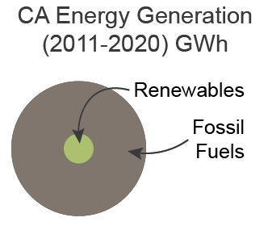
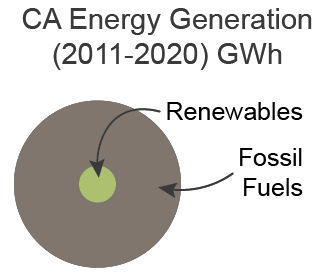

California Energy Map
The choropleth map represents the energy consumption in each California county and the proportional symbol map shows the energy (renewable and fossil fuels) generated in each county from 2011 to 2020.

California has the reputation nationally and internationally as a leader in the reduction of emissions of greenhouse gases from the burning of fossil fuels. With California becoming the most populous state in 1962 combined with ever increasing needs for electricity and personal automobile after World War II, the state started looking to cut down on pollutants.
One example of California’s leadership in this area was the creation of the California Air Resources Board (CARB) in 1967. It was focused on improving air quality and reducing air pollutants through the regulation of engine emissions. In fact, in 2024, small gas motors will no longer be legal to sell in the state forcing a change over to electrically powered lawnmowers, lawn and garden equipment, and other things powered by these engines. The state also gives out one of the largest state incentives for electric and plug-in hybrid vehicles in the Unites States.
With its ever-increasing population, California has needed to increase energy generation while reducing its carbon footprint. According to a report from the U.S. Energy Information Administration (EIA), California was second in the US for electrical generation from renewables: first in solar, geothermal, and biomass; fourth in hydroelectric; and sixth in wind.
The growth is especially noticeable in the South East portion of the state where the desert is particularly well suited for solar production. Harnessing the power of tectonic plates has led to over 40 geothermal plants north of San Francisco. Of note should be Kern County which generates more than 50% of the state’s renewable energy with the largest wind and geothermal facilities and the second-largest solar field in the US.
Data sources:
CA Energy Commission,
EIA California State Energy Profile,
Community Voices: Kern’s energy industry continues to power the region’s economic growth,
Renewable energy in California for energy data and Freepik - Flaticon for icons.
Cartographers/developers/designers:
Wesley Street and Nimita Shery.


The choropleth map represents the energy consumption in each California county and the proportional symbol map shows the energy (renewable and fossil fuels) generated in each county from 2011 to 2020.
